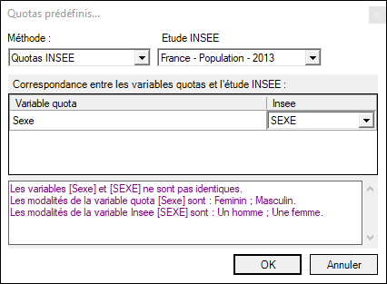
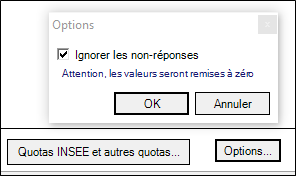
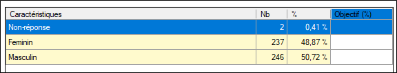

REDRESSER / DÉFINIR DES QUOTAS
Malgré tous les efforts déployés pour sélectionner les individus, lors des phases d’e-mailing par exemple, il se peut qu’un échantillon soit « biaisé », c'est-à-dire que sa composition ne soit pas satisfaisante, car elle ne correspond pas aux critères de représentativité que l’on avait préalablement définis.
EXEMPLE :
Nous pensions atteindre 60% de femmes et 40% d’hommes et ce n’est en réalité pas le cas. Il faut alors « redresser » l’échantillon.
Pour mettre en place en redressement, procédez comme suit :
-
Dans l’onglet Données du Tableur, cliquez sur le bouton Redresser.
-
Cliquez sur Ajouter pour sélectionner la variable sur laquelle on souhaite redresser l’échantillon depuis le menu Quota simple.
Si vous souhaitez effectuer des quotas croisés, sélectionnez l'option Quota croisé, puis sélectionnez vos différentes variables.
-
Cliquez sur OK.
-
Indiquez le pourcentage que vous souhaitez obtenir pour chaque modalité.
EXEMPLE :
Dans notre exemple, nous avons actuellement 17% des répondants qui sont Français hors nous avions pour objectif d’avoir 20% de personnes françaises sondées. Idem pour les autres nationalités. Le but étant de rendre l’échantillon représentatif de la population étudiée sur ce critère.Pour obtenir des résultats représentatifs de la population française, vous pouvez appliquer un redressement de votre échantillon à partir des quotas de référence fournis par l'INSEE. Pour ce faire, cliquez sur Quotas INSEE et autres quotas..., sélectionnez la méthode à utiliser, l'étude INSEE puis choisissez la variable INSEE qui correspond à votre variable quota.

REMARQUE : Par défaut, les non-réponses sont ignorées, si vous souhaitez les prendre en compte, cliquez sur Options... puis décochez la case Ignorer les non-réponses.

Les non-réponses s'afficheront en plus des autres modalités de votre variable quota.
Si vous souhaitez fixer l'effectif redressé, il suffit de cocher l'option Fixer l'effectif redressé et de définir l'effectif.
-
Sélectionnez la méthode de calcul à utiliser :
-
La méthode Pondérer les observations permet d’affecter un poids à chaque observation.
EXEMPLE :
Si votre échantillon ne contient pas assez de répondants Français, il sera affecté à chaque observation qui contient la valeur France pour la variable relative au pays d’origine un poids supérieur à 1. Par contre, comme on a 33% de répondants espagnols, un barème inférieur à 1 sera affecté aux observations qui contiennent la valeur Espagne pour la variable relative au pays d’origine.
-
La méthode Extraire l’échantillon consiste à extraire un échantillon qui permet d’affecter à la nouvelle variable Redressement les modalités 1 ou 0 (1 correspondant aux observations retenues pour représenter l’échantillon).
-
-
Cliquez sur Terminer.
Une nouvelle variable « Redressement » sera créée (cette variable peut être utilisée en tant que strate (profil) dans les tableaux de bord) : vous pourrez ainsi visualiser les tableaux de bord sur le nouvel échantillon rendu représentatif de la population étudiée par redressement.


Méthode de calcul des quotas
Sur la base des variables devant faire l’objet d’un redressement, on part de la répartition des individus sur chaque modalité de réponse (ou croisement de modalités) et l’on tente de « caler » l’échantillon de manière itérative.
On indique à côté de l’effectif brut de chaque modalité l’effectif cible à obtenir.
Le logiciel commence par chercher, pour chaque catégorie, le coefficient à appliquer pour atteindre la distribution cible. Il affecte ensuite à chaque individu, selon ses réponses à chacune des variables de redressement, une combinaison des coefficients trouvés pour les modalités qui le concernent. Cette opération est réitérée sur la distribution obtenue, jusqu’à ce que l’effectif cible de toutes les modalités soit atteint.
Une boucle est faite (au maximum 100 fois) jusqu’à ce que le critère d’arrêt (coefficient de différence entre la valeur souhaitée et la valeur actuelle) soit atteint.
Entre 1 et 10 boucle : arrêt si coeff <= 1.001, entre 10 et 100 boucle : arrêt si coeff <= 1.01